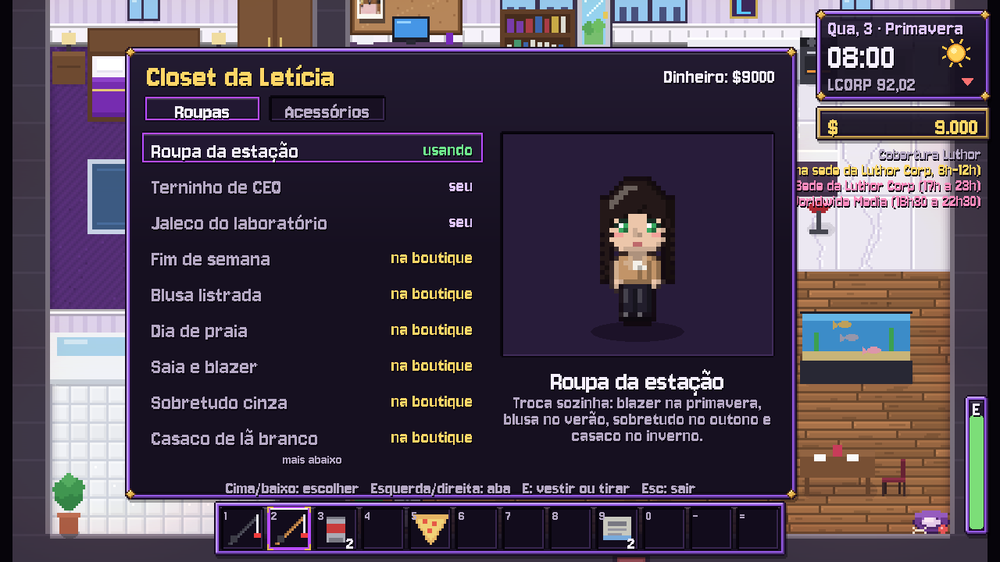
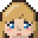

Letícia Luthor
Letícia Luthor é a protagonista: a jovem CEO da Luthor Corp, em National City. Depois da morte do pai, Alexander, ela assume a empresa, o laboratório e um conselho cheio de opiniões. Os tios, Conrad e Edmund, querem a empresa de volta.
O dia a dia
O dia começa às 6h na cobertura e termina quando ela vai dormir (ou às 2h, quando desmaia e acorda no hospital). Entre uma coisa e outra: trabalhar no laboratório, vender produtos na Mesa de Contratos, pescar, cozinhar, cuidar da horta, conversar com a cidade e, quem sabe, se apaixonar.
Aniversário
No dia 6 do Outono (véspera da Feira da Colheita) as amigas preparam uma festa surpresa no terraço, das 19h às 23h, com a Jess de anfitriã. Vão a namorada e as amigas com 2 ou mais corações, cada uma com um presente. Quem perde a festa ganha o bolo da Jess na manhã seguinte.
Closet
O guarda-roupa da cobertura tem 24 looks e os acessórios comprados na La Boutique. A roupa escolhida aparece no jogo e nas cenas, e as amigas comentam o look.

| Luthor Corp | |
|---|---|
| CatCo |  Lucy |
| Moradores | |
| Conti Moretti | |
| De fora da cidade |